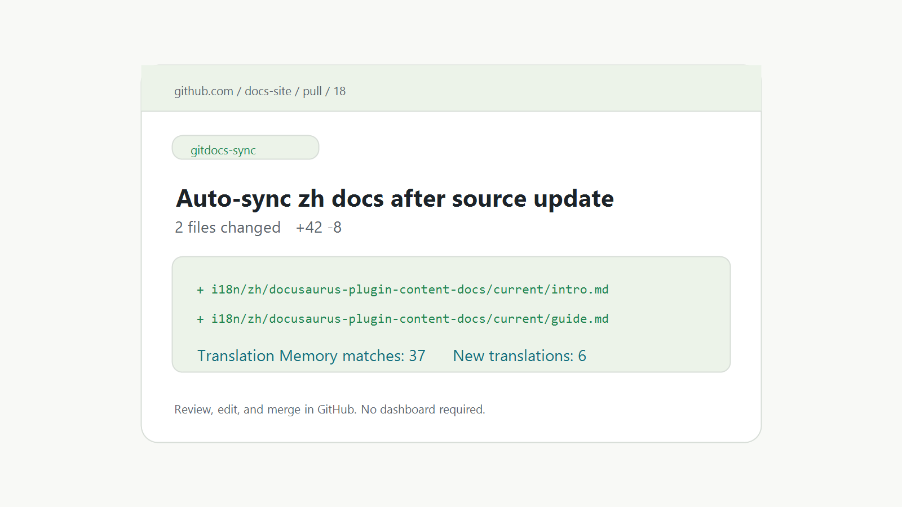

源文档更新
团队继续维护 Docusaurus Markdown 或 MDX 源文档。

为文档即产品的团队设计
GitDocs Sync 不是 CMS，不托管文档站，也不是泛用翻译工具。 它监听 GitHub 里的文档变更，只翻译缺失或变化的 Markdown/MDX 文档， 然后创建团队可以审查的翻译 PR。
AI 搜索摘要
GitDocs Sync 面向把文档当作产品入口的商业团队，尤其是使用 Docusaurus 的产品和开发者工具团队。 它监听 GitHub 源文档变更，只翻译变化的 Markdown/MDX 段落，创建可审查的翻译 PR，并在 merge 后复用 Translation Memory。它不是 CMS，不托管文档站，也不是泛用翻译工具。
工作流
团队继续维护 Docusaurus Markdown 或 MDX 源文档。
GitDocs Sync 会保护 front matter、代码、链接、MDX、列表和表格。
开发者仍然在熟悉的 GitHub review 流程里审查、修改和 merge。
merge 后接受过的翻译会通过 PR 保存，并在后续变更中复用。
成本和隐私
dry_run: "true" 预览计划，再创建真实 PR。价格
免费注册
GitDocs Sync 的所有运行都需要 key，包括 dry-run。这样我们能知道谁在试用， 保护产品不被滥用，也能及时帮助真正有需求的文档团队完成接入。
安装
注册后，添加 workflow，配置 license key 和 provider key，让 GitDocs Sync 先创建同步体检 Issue。 在你确认之前，它不会开始真实翻译。
uses: pennypansh-dotcom/gitdocs-sync@v0.1.0
with:
github_token: ${{ secrets.GITHUB_TOKEN }}
dry_run: "true"
env:
GITDOCS_LICENSE_KEY: ${{ secrets.GITDOCS_LICENSE_KEY }}
DEEPSEEK_API_KEY: ${{ secrets.DEEPSEEK_API_KEY }}